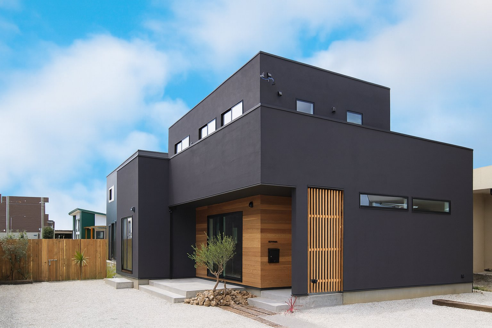
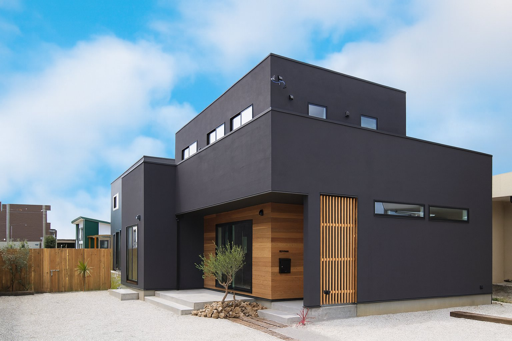

Meirin(明倫)とは
Meirinは、不動産と資金計画を中心としたコンサルティング会社です。
私たちが大切にしているのは「絆」と「繋がり」。
数字や条件だけでなく、人と人の関係性や地域とのつながりを尊重し、長期的に安心できる意思決定をお手伝いします。
協業会社offceK
Meirinは、offceKと一緒に仕事しています。
offceKでは不動産コンサルを中心とした活動を行っています。
私たちの価値観
絆：家族・チーム・地域など、人の関係性を重視した提案
繋がり：専門家・行政・金融機関とのネットワークを活かし、最適な選択肢を共に探します。
繋がり：専門家・行政・金融機関とのネットワークを活かし、最適な選択肢を共に探します。
サービス内容
不動産コンサルティング
売買・賃貸・管理・活用の判断を、客観的なデータと現場感をもとにサポートします。資金計画・金融機関との交渉支援
返済計画や資金繰りのシミュレーションを行い、金融機関との対話に必要な資料づくりや方針設計を支援します。※投資助言や媒介といった法的な登録が必要な行為は行いません。
プロジェクト伴走支援
関係者調整や工程設計、意思決定会議の設計など、長期的な安心と納得を実現するためのサポートを行います。お問い合わせ
まずはお気軽にご相談ください。
状況を丁寧にヒアリングし、課題整理や方向性のたたき台をご用意いたします。
状況を丁寧にヒアリングし、課題整理や方向性のたたき台をご用意いたします。